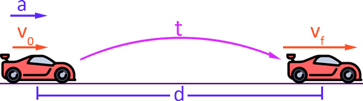

MOVIMIENTO RECTILÍNEO UNIFORME
El movimiento rectilíneo uniforme (MRU) es el movimiento que describe un cuerpo o partícula a través de una línea recta a velocidad constante.
Posición
La posición del cuerpo después de un tiempo se calcula a partir de la posición inicial y de la velocidad del cuerpo.
Velocidad
La velocidad de un cuerpo en un MRU es constante y viene definida como el cociente entre el incremento de espacio y el incremento de tiempo.
Aceleración
En el movimiento rectilíneo uniforme (MRU) la velocidad es constante, por lo que la aceleración es cero.